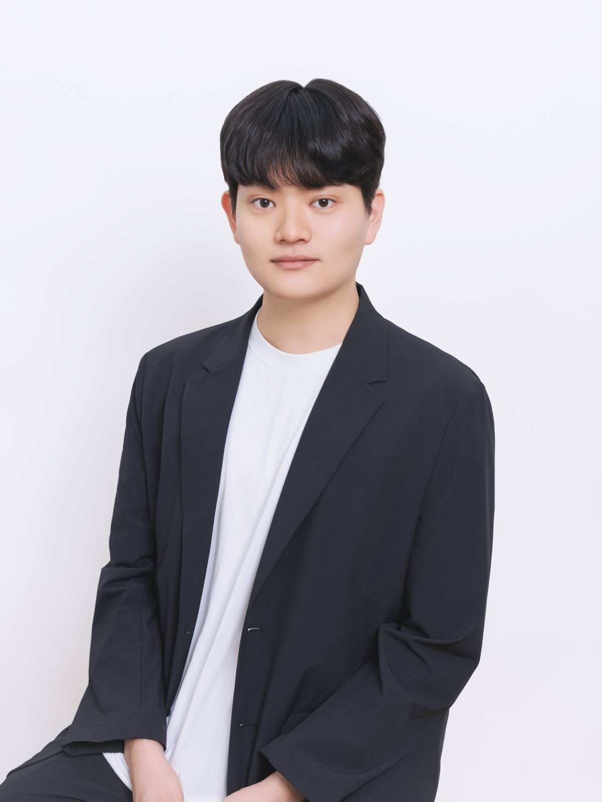

AAAAAAA (TBD)
Title and research details withheld.
Reality is abstract and high-dimensional. However, what we perceive are but fragments of it, colored by our own minds. From these fragments, how might we come to know the world more deeply?
For a fuller account of my perspective, see my academic journey.

Completed mandatory military service.
Exchange student in Mathematics and Industrial Engineering. GPA 4.25/4.3
| Course | Term | Grade |
|---|---|---|
| Mathematical Algorithms 2 (Graduate; Transformers) | Fall 2026 | In progress |
| Topics in Mathematics 2 (Analytic Number Theory) | Fall 2026 | In progress |
| Algorithm | Summer 2026 | A+ |
| Measure Theory and Probability | Spring 2026 | A− |
| Introduction to Mathematical Analysis with Practice 1 | Spring 2026 | A+ |
| Differential Equations | Summer 2025 | A+ |
| Advanced Calculus 1 | Spring 2025 | A+ |
| Linear Algebra | Spring 2025 | A+ |
| AI & Big Data Basics | Spring 2025 | A0 |
| Microeconomics | Summer 2023 | A0 |
| Macroeconomics | Summer 2021 | A+ |
| Course | Code | Grade |
|---|---|---|
| Introduction to Convex Optimization (Graduate) | IE56100 | A+ |
| Linear Programming & Optimization Techniques | MA42100 | A0 |
| Operations Research — Stochastic Models | IE33600 | A+ |
| Probability | MA41600 | A+ |
| Introduction to Discrete Mathematics | MA37500 | A+ |
| Engineering Economics | IE34300 | A+ |
Title and research details withheld.
This paper develops statistical estimators for equilibrium models from noisy observations, with consistency and asymptotic guarantees under different identification conditions.
Investigating graph-model pre-training with conventional losses followed by SPO+ fine-tuning, and studying perturbation robustness through distributionally robust optimization and assumptions on graph topology.
Project detailsSimulated demand in Seoul; used Gurobi and OSMnx to solve vehicle-routing and traveling-salesperson problems and visualize routes. Optimized photovoltaic installation area to reduce building energy costs.
Project detailsResearch collaborationFeb 2026–present
Co-authoring a manuscript on identification and statistical estimation in inverse variational inequalities.
Reading and studyApr 2025–Aug 2025
Led engineering outreach for high-school students and STEM activities for middle-school students; participated in educational programs for underrepresented students.
Managed digital communications and designed event announcements, campus banners, and graduation-exhibition posters.
Programming and tools: Python, MATLAB, R, Julia, C/C++, LaTeX, Gurobi, OSMnx.
Engineering software: Midas, ETABS, Rhino, Grasshopper, AutoCAD.
Languages: Korean (native), English (advanced).